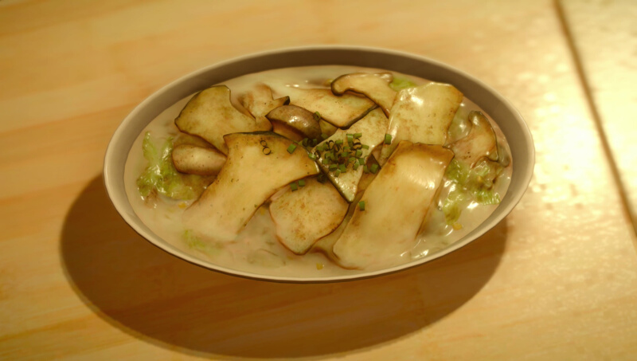

Packed Mushroom Stew
Active cooking time: 20 | Total cooking time: 20 | Serves 4

This stew is a much better use of Alstrooms than stuffing them into your
magic flask and accidentally triggering Cursecast!
Ingredients
- 1⁄4 cup butter (57g)
- 2 medium onions, sliced
- 3 cloves garlic, minced
- 3 slices ginger, cut about 1⁄2 inch (1cm) thick
- 1 lb mixed mushrooms (450g)
- salt and pepper, to taste
- 1⁄4 cup dry white wine (60mL)
- 11⁄2 cup vegetable or chicken stock (360mL)
- 1⁄2 cup half-and-half (120mL)
- 1⁄3 cup heavy cream (80mL)
- 2 tsp thyme leaves (4g)
- 2 tsp oregano (4g)
- dashes of white pepper and paprika (optional)
- 1 scallion, sliced
- flour
How to
- In a pot, melt the butter on medium heat. Add onions and cook
until soft and translucent, about 5-7 minutes
- Add garlic and ginger and cook for a few more minutes, until
fragrant.
- Add mushrooms and season with salt and pepper to taste. Cook
until soft and add the wine.
- Cook for a few minutes, then add vegetable/chicken stock and bring
to boil. Slowly stir in the half-and-half and heavy cream.
- Add the fresh thyme leaves and oregano. Stir in white pepper and
paprika, if using. Add the scallions, reserving a handful for the
garnish.
- Cover and simmer for 5 minutes until the stew thickens. If it doesn't
thicken to your liking, slowly stir in a few tbsp of flour, one at a time,
until thickened. Remember to continue seasoning with salt and
pepper, to taste.
- Garnish with scallion slices. Enjoy on its own or over rice!
Effect(s)
Strength/Magic +200, Max HP reduced to 10%
Source